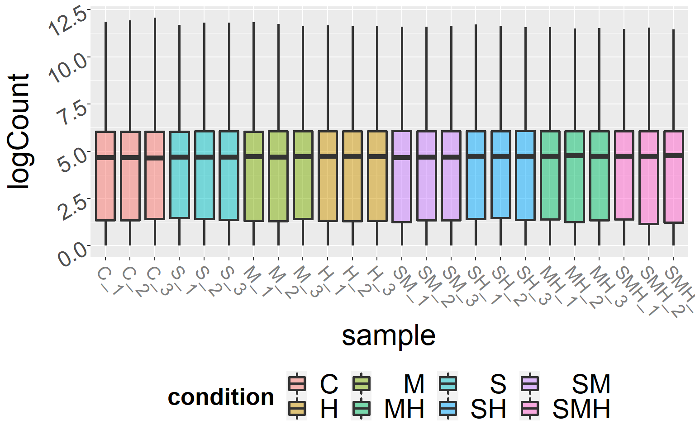
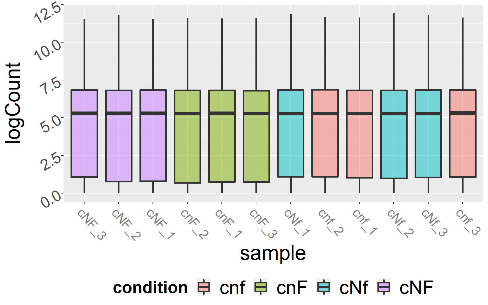
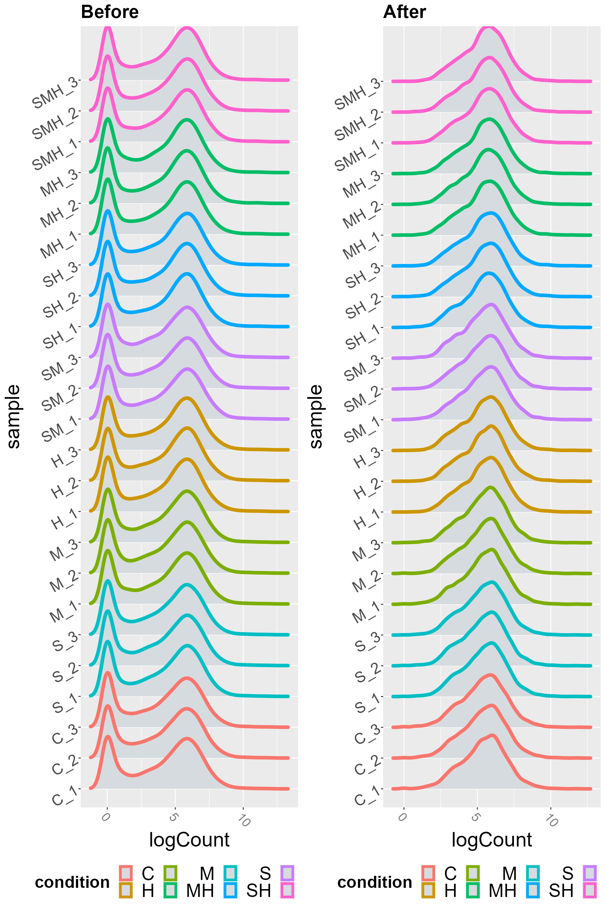
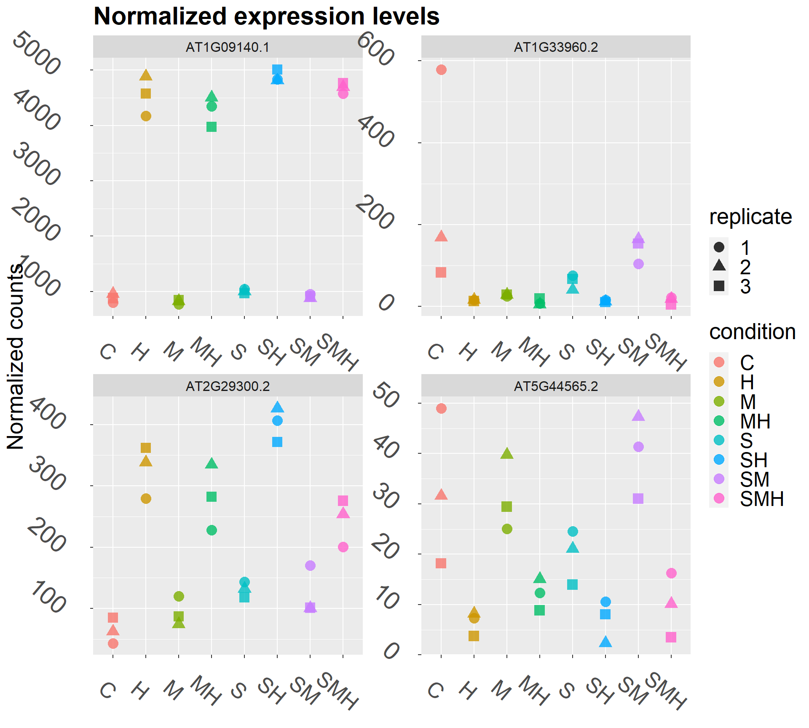
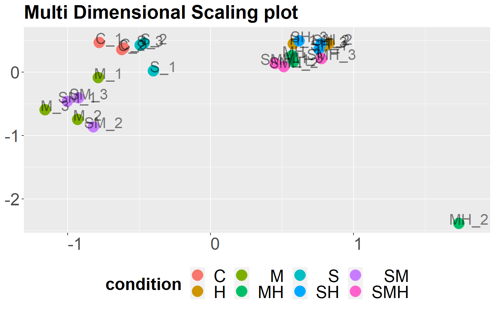
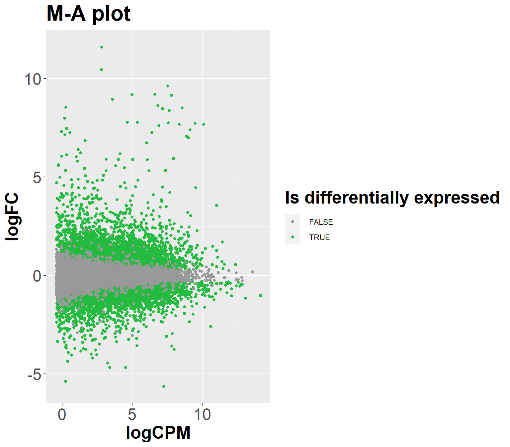
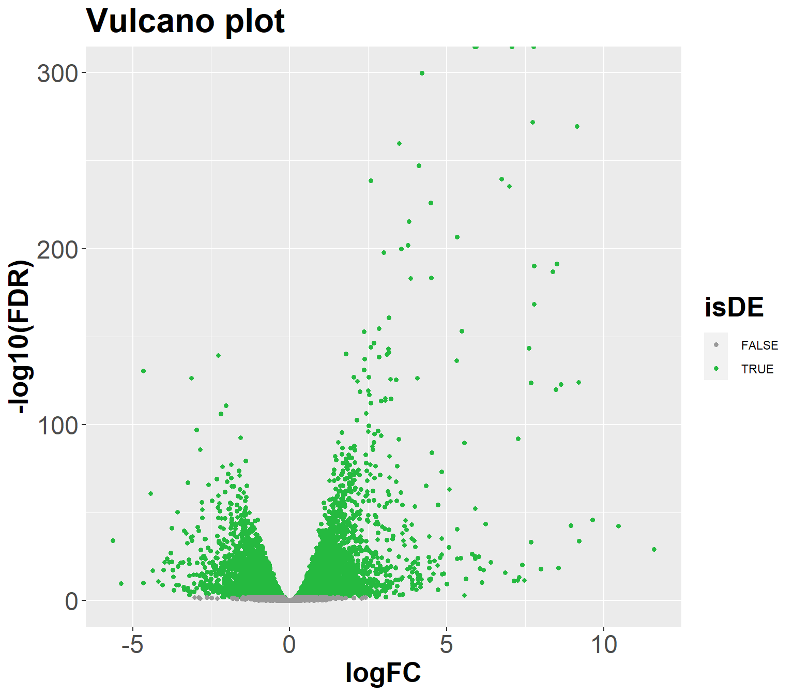
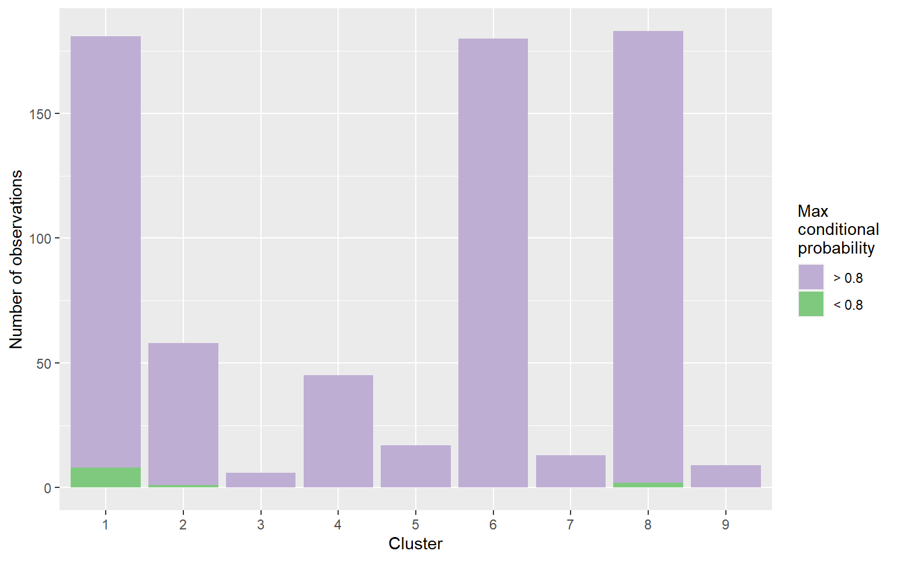
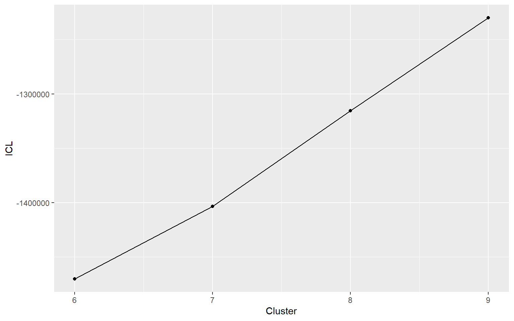
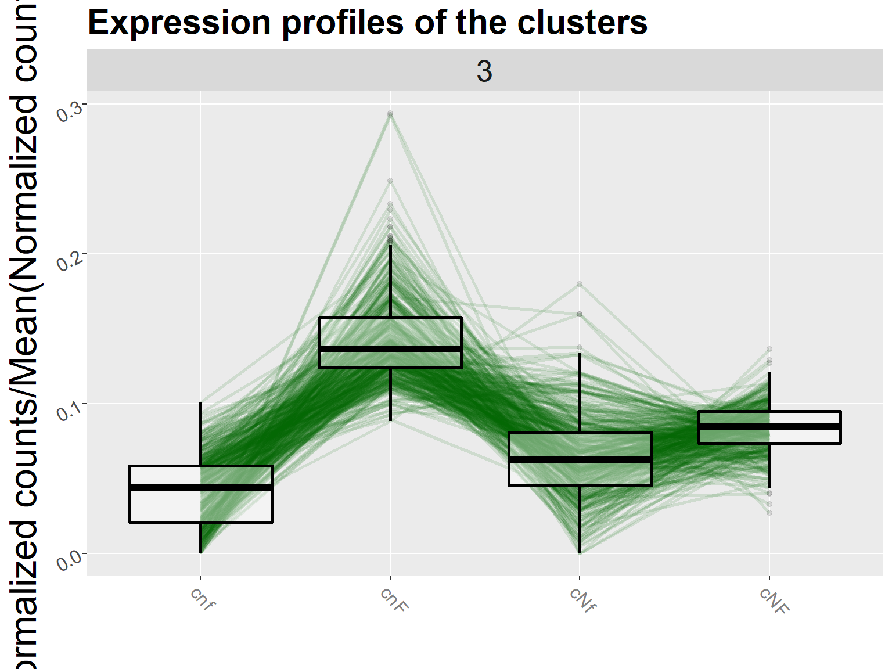

DIANE Programming Interface
Source:vignettes/DIANE_Programming_Interface.Rmd
DIANE_Programming_Interface.RmdInput data
The DIANE companion dataset is meant to illustrate its functionnality and provide an explicit example of the expected input data.
Here, the format of the count data, conditions, and design will be detailed.
Data pre-processing
Visualization of raw counts
For each condition, we can visualize the distributions of gene counts with boxplots or violin plots.
DIANE::draw_distributions(demo_data_At$raw_counts, boxplot = TRUE) #> No id variables; using all as measure variables

Normalisation
The TCC R package is used for the normalisation step here, to make samples comparable by correcting for their differences in sequencing depths. This step is mandatory before further statitical analysis.
You can choose to normalize using the methods implemented in edgeR, referenced as ‘tmm’, or the one used in DESeq, referenced as ‘deseq2’.
Those normalisation methods rely on the hypothesis that a very small proportion of genes are differentially expressed between your samples. If you suspect a lot of genes could be differentially expressed in your data, TCC offers the possibility to proceed to a first detection of potential differentially expressed genes, to remove them, and then provide a final less biased normalisation.
In that case, enable “prior removal of differentially expressed genes”. TCC will perform the following setp, depending on the normalisation method you chose : + tmm/deseq2 temporary normalisation + potential DEG identification and removal using edgeR test method + tmm/deseq2 definitive normalisation
We use here the default parameters :
tcc_object <- DIANE::normalize(demo_data_At$raw_counts, demo_data_At$conditions, iteration = FALSE) #> TCC::INFO: Calculating normalization factors using tmm ... #> TCC::INFO: Done. normalized_counts <- TCC::getNormalizedData(tcc_object) DIANE::draw_distributions(normalized_counts, boxplot = TRUE)

Low counts removal
Removing genes with very low aboundance is a common practice in RNA-Seq analysis pipelines for several reasons :
- They have little biological signifiance, and could be caused either by noise or mapping errors.
- The statitical modelling we are planning to perform next is not well suited for low counts, as they make the mean-variance relationship harder to estimate.
There is no absolute and commonly accpeted threshold value, but it is recommended to allow only genes with more than 10 counts per sample in average. DIANE thus proposes a threshold at 10*sampleNumber, but feel free to experiment with other values depending on your dataset.
threshold = 10*length(demo_data_At$conditions) tcc_object <- DIANE::filter_low_counts(tcc_object, threshold) normalized_counts <- TCC::getNormalizedData(tcc_object)
We can really see the difference with the violin plot view of the effect of low count genes removal :
DIANE::draw_distributions(demo_data_At$raw_counts, boxplot = FALSE) #> No id variables; using all as measure variables

DIANE::draw_distributions(normalized_counts, boxplot = FALSE)

Sample homogeneity
The multi dimensional scaling plot indicates if the samples are close regarding the expression of the genes, and the colors represent the conditions.
DIANE::draw_MDS(normalized.count = normalized_counts)

Differential expression analysis
Let’s say we can’t to preform DEA between the conditions cnF and cNF :
fit <- DIANE::estimateDispersion(tcc = tcc_object, conditions = demo_data_At$conditions) #> Warning in edgeR::DGEList(counts = tcc$count, lib.size = tcc$norm.factors, : #> norm factors don't multiply to 1 topTags <- DIANE::estimateDEGs(fit, reference = "cNF", perturbation = "cnF", p.value = 0.01) head(topTags$table) #> genes logFC logCPM LR PValue FDR #> AT1G29100 AT1G29100 -3.818168 4.526549 602.3957 5.043214e-133 1.028917e-128 #> AT1G19250 AT1G19250 -3.624870 5.355096 561.2735 4.442074e-124 4.531360e-120 #> AT4G21680 AT4G21680 -3.856316 6.023410 538.4956 4.005963e-119 2.724322e-115 #> AT2G13810 AT2G13810 -4.107466 4.976653 390.3910 6.803762e-87 3.470259e-83 #> AT2G41810 AT2G41810 -4.021549 4.050335 292.0503 1.777516e-65 7.252978e-62 #> AT3G56980 AT3G56980 -3.135444 6.145899 284.6629 7.235921e-64 2.460454e-60 tags <- DIANE::estimateDEGs(fit, reference = "cNF", perturbation = "cnF", p.value = 1) DIANE::plotDEGs(tags)

DIANE::plotDEGs(tags, MA = FALSE)

Expression based clustering
The coseq package tests a range of different clusters in order to give the best fit to the data. It fits Poisson mixture models to the genes in order to estimate one multidimensional Poisson distribution par cluster.
genes <- topTags$table$genes clustering <- DIANE::run_coseq(conds = unique(demo_data_At$conditions), data = normalized_counts, genes = genes, K = 6:9) #> **************************************** #> coseq analysis: Poisson approach & none transformation #> K = 6 to 9 #> Use set.seed() prior to running coseq for reproducible results. #> **************************************** #> Running K = 6 ... #> [1] "Initialization: 1" #> [1] "Log-like diff: 14.1849619578411" #> [1] "Log-like diff: 10.031023052711" #> [1] "Log-like diff: 10.2982311508117" #> [1] "Log-like diff: 13.9917897248255" #> [1] "Log-like diff: 17.1009888484953" #> Running K = 7 ... #> [1] "Initialization: 1" #> [1] "Log-like diff: 7.3246165969451" #> [1] "Log-like diff: 2.11611919456799" #> [1] "Log-like diff: 0.471904423879472" #> [1] "Log-like diff: 0.162978539012355" #> [1] "Log-like diff: 0.0142180237622025" #> Running K = 8 ... #> [1] "Initialization: 1" #> [1] "Log-like diff: 885.769799073863" #> [1] "Log-like diff: 764.23432372588" #> [1] "Log-like diff: 249.132812560656" #> [1] "Log-like diff: 84.4091765240484" #> [1] "Log-like diff: 16.4766711149635" #> Running K = 9 ... #> [1] "Initialization: 1" #> [1] "Log-like diff: 31.1236502875551" #> [1] "Log-like diff: 0.968689519327515" #> [1] "Log-like diff: 1.09066628749762" #> [1] "Log-like diff: 1.07308111523972" #> [1] "Log-like diff: 1.04396728368953" #> Note: slope heuristics for model selection only applied if > 10 models are fit. DIANE::draw_coseq_run(clustering$model, plot = "barplots") #> $probapost_barplots

DIANE::draw_coseq_run(clustering$model, plot = "ICL") #> $ICL

For each number of cluster, the ICL (Integrated Completed Likelihood) is computed. It combines two elements :
The global likelihood of the clustering. It quantifies how accurate the clustering seems, regarding the posterior probability of each element to belong the its predicted cluster. It can be computed using the Poisson probability densities resulting from the proposed clustering, for all the genes.
The number of clusters. As the likelihood tends to grow monotonously with the number of clusters, resulting in a very big number of groups, that would not be very informative for the user. Thus, the ICL penalizes the clustering quality criteria with the number of clusters.
This is why the maximal value of ICL can be interpreted as an approximation of the ideal number of clusters.
Profiles visualization
The user can display either a view of all the clusters, or focus one one in particular :
DIANE::draw_profiles(data = normalized_counts, clustering$membership, conds = unique(demo_data_At$conditions)) #> Using gene as id variables

DIANE::draw_profiles(data = normalized_counts, clustering$membership, conds = unique(demo_data_At$conditions), k = 3) #> Using gene as id variables
